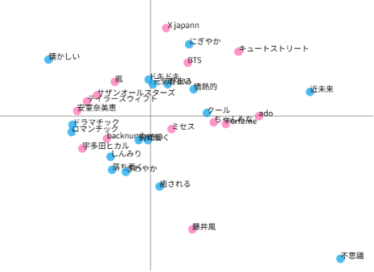
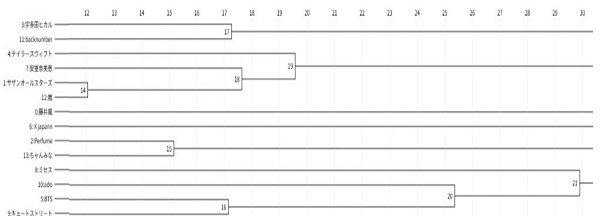
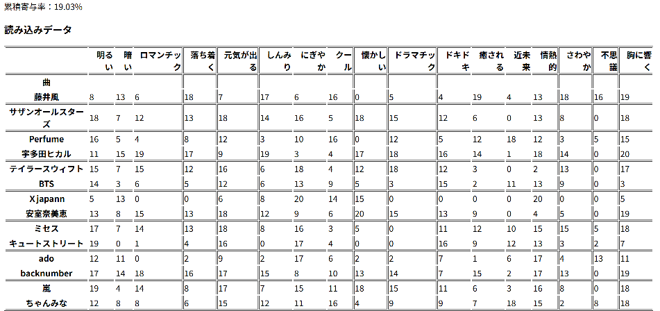

第五五回
～ コレスポンデンス分析・クラスター分析 ～
私たちの班は「音楽アーティストのイメージ分析」を行いました。
アーティスト14種《藤井風、サザンオールスターズ、perfume、宇多田ヒカル、テイラースウィフト、BTS、Xjapan、安室奈美恵、ミセス、cute street、
ado、backnumber、嵐、ちゃんみな》を
イメージ17種《明るい、暗い、ロマンチック、落ち着く、元気が出る、しんみり、にぎやか、クール、懐かしい、ドラマチック、ドキドキ、癒される、
近未来、情熱的、さわやか、不思議、胸に響く》で分析しました。
０から２０で計測。
累積寄与率19.03%
－コレスポンデンス分析－

－クラスター分析－


クロス分析のcsvファイルはこちら
音楽アーティストのイメージ分析の資料はこちら（PDFファイル）